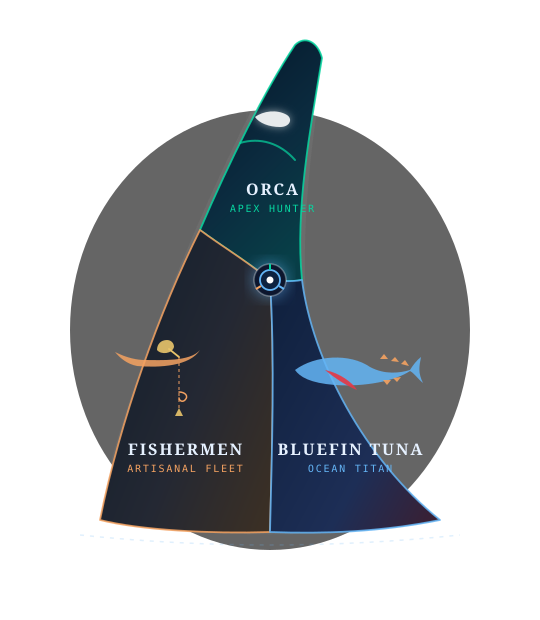
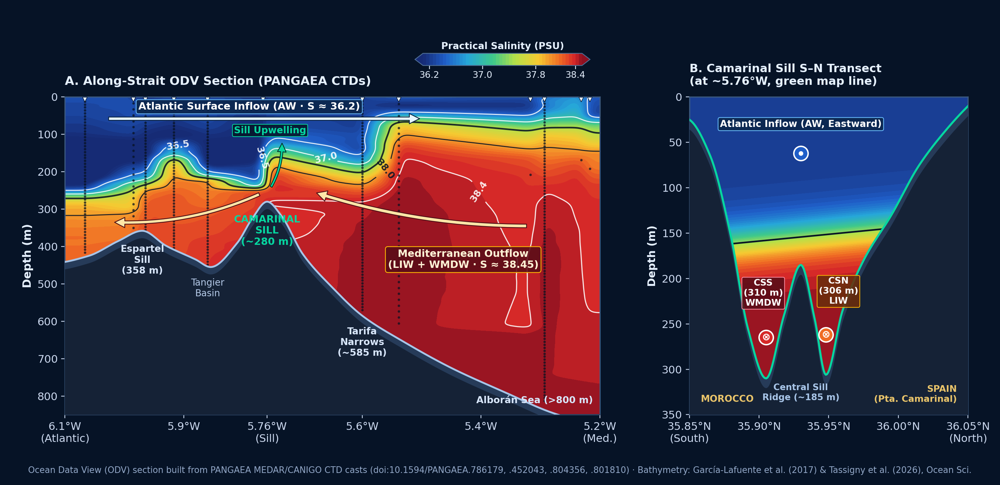
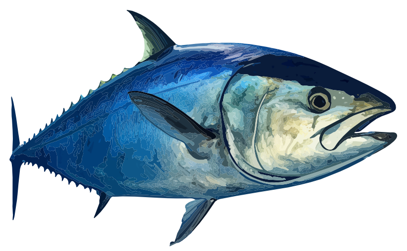
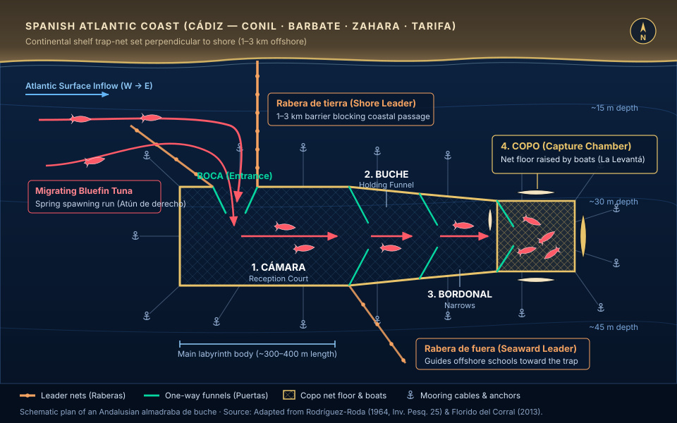
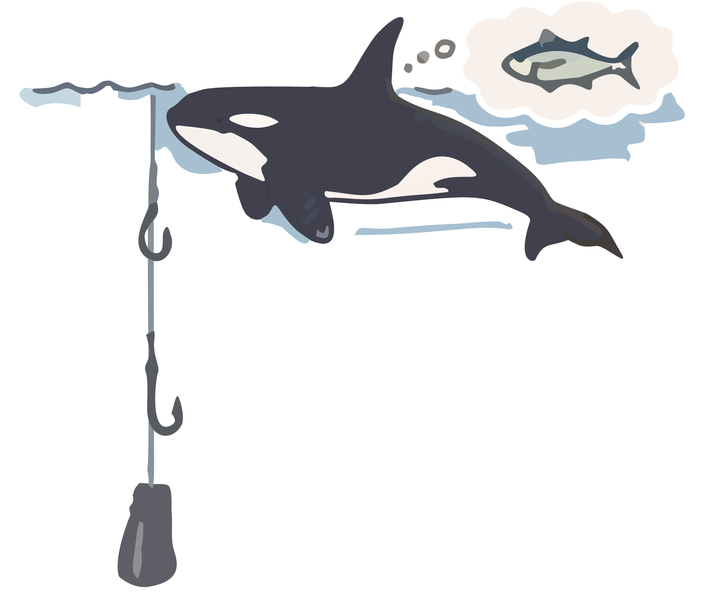
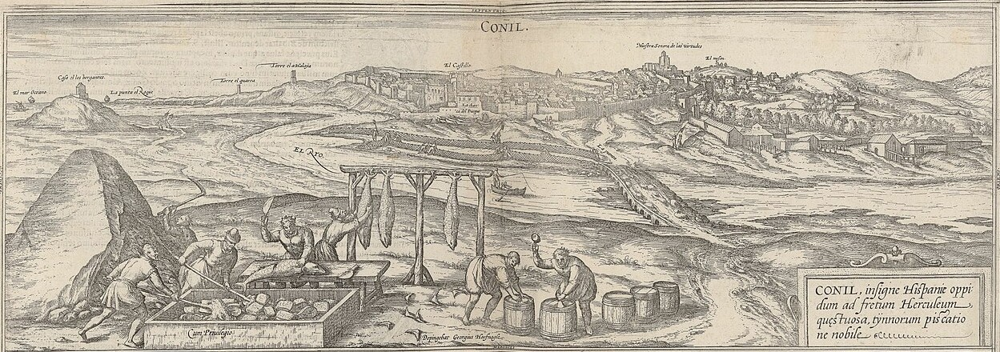
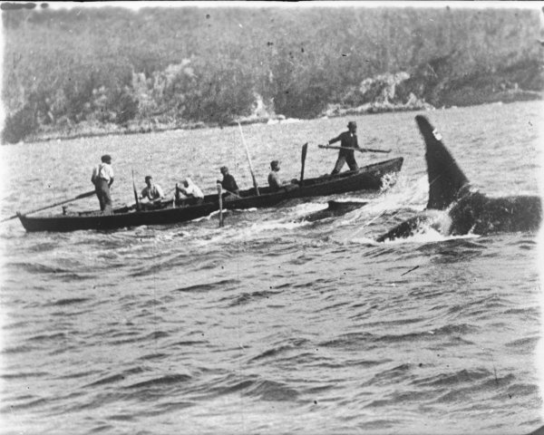

Where Titans Meet
ORCAS · BLUEFIN TUNA · FISHERMEN
IN THE STRAIT OF GIBRALTAR
Beyond modern shipping lanes and headlines, an ancient drama endures: a fragile, triangular struggle between apex predator, ocean titan, and artisanal fishermen.

The 14K Gateway
The Strait of Gibraltar has shaped civilisations, migrations, and ecosystems for millions of years. Around 5.96 million years ago, the modern Strait did not exist. The collision of the African and Eurasian plates closed the Strait, isolating the Mediterranean Sea and leading to its near-total desiccation — the Messinian Salinity Crisis. Basin sea levels dropped by ~1,500 m.
Later, 5.33 million years ago, an Atlantic megaflood refilled the Mediterranean Sea through a process known as the Zanclean flood. The two basins were reconnected and the Strait of Gibraltar was established as the only gateway for marine life to pass between the Atlantic and Mediterranean.


The Meeting of Two Worlds
Beneath the surface lies the Strait's grandest submarine barrier: the Camarinal Sill. Rising to a shallow crest of ~280 m between Europe and Africa, it separates surrounding basins that plunge past 800–1,000 m. In the upper 150 m, fresher Atlantic Surface Water (AW, S ≈ 36.2 PSU) surges eastward into the Mediterranean. Beneath this inflow, dense, hypersaline Mediterranean Outflow Water (LIW & WMDW, S ≈ 38.45 PSU) spills westward over the sill's twin channels (CSN and CSS). Where these two water masses collide over the sill topography, internal hydraulic jumps and intense shear force nutrient-rich deep water upward — making the sector from Punta Camarinal to "Las Bajas" one of the richest historic fishing grounds in the Atlantic–Mediterranean corridor.

Bluefin Tuna Migration
Swimming from the Gulf of Mexico to the Mediterranean Sea and back again, the Atlantic bluefin tuna (Thunnus thynnus) surges in spring to spawn in the Med and returns in summer to feed in the Atlantic. Electronic tagging studies by Block et al. (2005) and Rooker et al. (2008) tracked hundreds of fish across the Atlantic basin, revealing two populations — western spawners homing to the Gulf of Mexico and eastern spawners returning to the Mediterranean — that overlap on open-ocean foraging grounds. Migrating adults passing through the Strait average 187 kg (ranging from 170 cm to 290 cm in length). Riding the shallow surface Atlantic inflow eastward and returning through the cold, deep Mediterranean outflow at depths between 290 m and 500 m, the tuna dictate the cadence of the Strait. Local fishermen adapt their artisanal techniques to harvest them — from coastal trap-nets when they enter the Strait to deep drop-lines when they exit. Interestingly, resident Iberian killer whales adapt alongside human fishing techniques.

The Prey — Migrating Adult Bluefin
The Iberian Orcas
Despite a deeply ingrained misconception in English, the orca (Orcinus orca) is not a whale — it is an oceanic dolphin, and the largest living member of the dolphin family Delphinidae. Even the English name "killer whale" is a historical mistranslation: 18th-century Spanish sailors and whalers who witnessed coordinated orca pods hunting and bringing down giant baleen whales along Iberian coasts called them asesina de ballenas — literally "whale killer", echoing Pliny the Elder's 1st-century AD account off Cádiz (Naturalis Historia). When English mariners borrowed the Spanish phrase, the word order flipped from whale killer to killer whale, obscuring both their true prey-hunting name and their identity as dolphins.
Today, the entire critically endangered resident subpopulation of Iberian orcas consists of just 39 individuals, structured into 5 matrilineal pods. When actively hunting free-swimming tuna, orcas engage in prolonged pursuits lasting up to 30 minutes at sustained speeds of 3.7 to 6.0 m/s (~13–21 km/h). However, active endurance-exhaustion hunting can only catch small-to-medium tuna (0.8 m to 1.5 m long, weighing 20–70 kg); larger tuna exceed the orcas' aerobic limits for open-water chases. Reproduction in the Strait is extremely sensitive to prey availability: when bluefin tuna stocks dropped, lactating mothers could not secure sufficient calories through depredation, resulting in nutritional stress (and potentially mobilizing bioaccumulated toxic pollutants stored in blubber) that caused total calf mortality across the interacting pods.
Active Endurance-Exhaustion Hunting
Energetic Demand
Orca Population Growth
Total community abundance, 1999–2011
Tuna Catches vs. Calf Survival
Tuna catches (tons) and interacting pod calf survival rate
Fishermen & 'Almadraba'
In spring, for over 3,000 years, humans have set great labyrinth-nets called almadrabas along the Spanish Atlantic coasts — trapping tuna as they pass west-to-east on their journey to spawn. Riding the shallow Atlantic inflow, the tuna face a dual trial: human nets anchored along the shoreline and pods of Iberian orcas hunting in the open shallows, driving the fish to exhaustion in rapid, sustained pursuits.

Fleet Density at Las Bajas
Tarifa Case Study — 2004 Season
Co-Hunting
In summer, when tuna return to the Atlantic, a different artisanal technique takes over: 'drop-line' fishery (pesca de la piedra). Again, orcas, tuna, and fishermen converge on an underwater plateau called 'Las Bajas' — a 2 nautical mile × 1 nautical mile shelf (6.9 km²) located midway between Tarifa and Tangier. Every 6-hour tidal cycle, rising waters create turbulence over the seafloor that upwells nutrients and concentrates fish, turning Las Bajas into the arena where tuna, orcas, and fishermen collide. Here, small 5–6 meter Moroccan wooden boats and Spanish artisanal vessels deploy a 10–14 kg stone tied with a false knot to lower three baited hooks down to 300+ meters. When the stone hits bottom, fishermen pull the line to snap the knot, leaving the stone on the seabed as the baited hooks float upward. Hauling a hooked tuna back up by hand takes ~20 minutes. On a typical summer day, 50–60 Moroccan boats and 10–20 Spanish vessels gather at Las Bajas, creating a density of about 8.7 fishing lines per km². Each boat drops about 18 stones per 6-hour tide, hooking 1 tuna for every 10 stone drops. Within the Iberian orca subpopulation, 2 out of 5 pods have learned to steal large tuna hooked in artisanal drop-line fisheries. Rather than diving 300+ meters, the orcas wait in the top 2 to 50 meters. Video analysis reveals that orcas swim along the vertical lines, pressing their pectoral fins, snouts, melons, and bellies against the ropes to feel line tension and weight vibrations — detecting whether a fish is hooked below. This cultural strategy spread in less than a generation after stone fishing was introduced in 1995.

Underwater Video Evidence — Tactile Line Assessment (Esteve, 2026)
The Stone Fishing Gear
The Depredation Payoff
The Demographic Divide
Three Titans. One Strait.
A Story Unfinished.
The Strait of Gibraltar remains one of the last places on Earth where
apex predators, ancient fisheries, and marine biodiversity intersect in a
living, breathing equilibrium — one that demands our understanding and protection. A fragile equilibrium, sustained by tradition and respect for the sea.
A compelling hypothesis has arisen among researchers that coastal hominins — including Neanderthals inhabiting the sea caves of Gibraltar — may have harvested bluefin tuna alongside hunting orcas, as pods drove exhausted fish into shallow embayments where shore crews could beach-seine or spear them, much as pre-modern Strait fishermen did for millennia.
Such cross-species cooperation is historically documented. In Twofold Bay (Eden, Australia), shore-based whalers — both Indigenous Thawa people and European boat crews — cooperated for nearly a century with wild orca pods led by the iconic male Old Tom, honoring an unwritten pact known as the 'Law of the Tongue' whereby the orcas fed on the tongue and lips before boatmen towed the catch ashore. Modeling this mutualism through fuzzy rule-based logic, Coppola et al. (2015) demonstrated that reciprocal trust and cultural learning, rather than mere opportunism, sustained this rare human–cetacean partnership across generations.
Archival Evidence — Ancient Coastal Tuna Harvest & Wild Orca–Human Cooperation


nla.obj-140622977) / Wikimedia Commons (Public Domain)